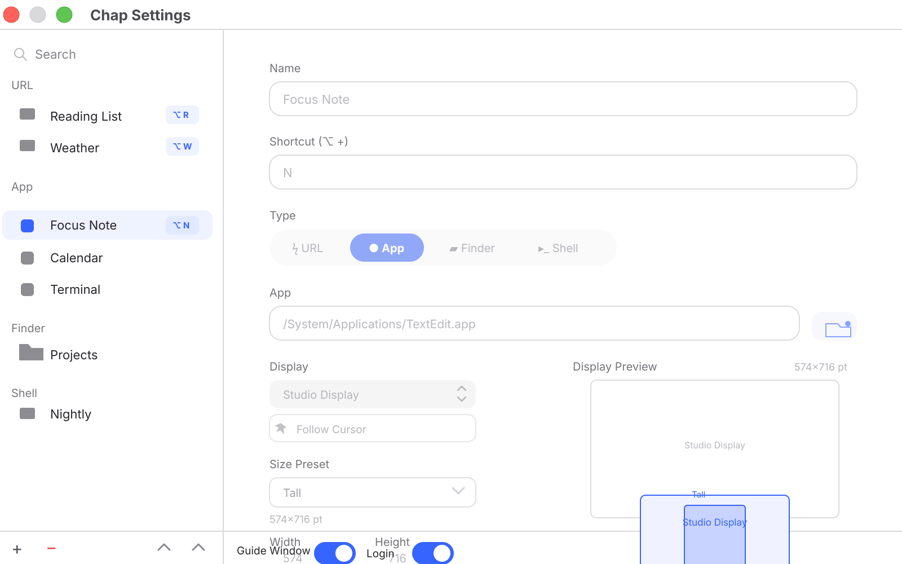
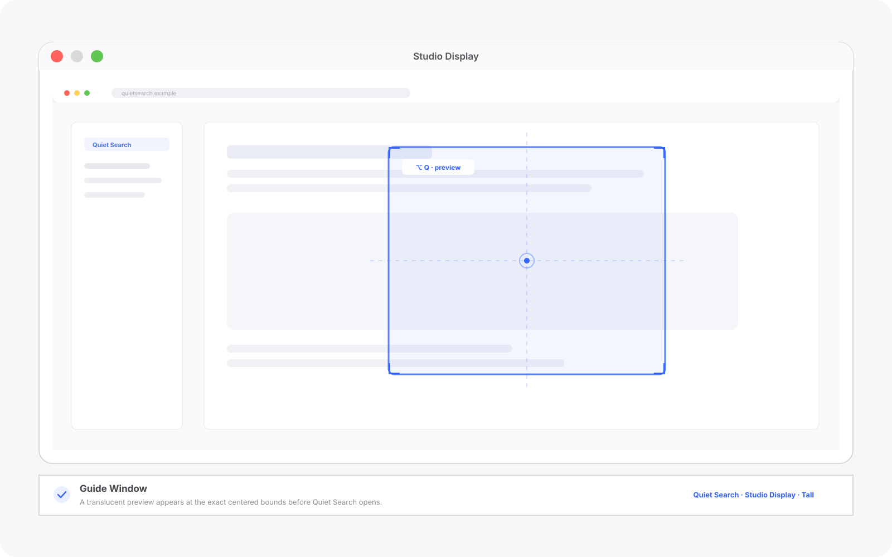

A macOS command center
Press Option.
Start centered.
Chap opens a saved site, app, folder, or script with your Option shortcut — at the size you chose, in the center of the display you chose.

One shortcut.
Three remembered choices.
- 01 / COMMANDWhat opens
A URL, app, folder, or script.
- 02 / DISPLAYWhere it opens
Follow cursor or a named screen.
- 03 / PLACEMENTHow it arrives
Your size, centered and verified.
